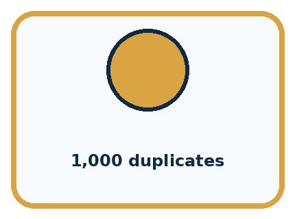
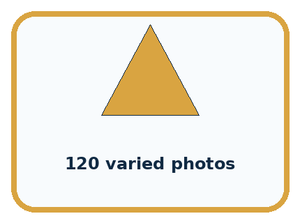
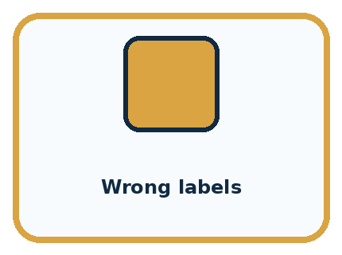
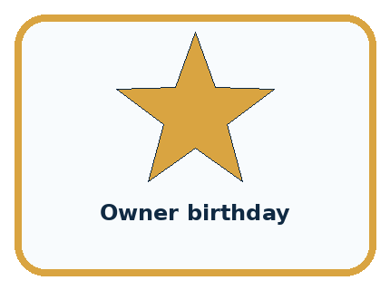

AI Academy · Level 1 · Grade 6 · Week 21 · Student lesson
Good Data, Bad Data
Learn to understand, design, build, test and explain AI systems responsibly.
Project: Helpful Classroom Sorter
THE CONNECTED WEEK
Check the source before changing the value.
Audit schemas and units, preserve measured zero and missingness, and clean a new flight log with traceable evidence.
Keep one habit: Keep the raw record → justify each change → report assessed and unresolved records.
Main lesson · Section 1
Which changes does the evidence support?
Check schema, units, identity and source records without turning unknown into zero.
Start with a tidy-looking table
A fully filled table can contain invented values, while an honest table still has missing observations. Keep the raw records and link each correction to evidence before counting results.
Retrieve the missing-availability limit
A recommender needs availability, but that field is blank. Can the highest preference score establish that the item is available? Explain.
Close your notes first. A rough first answer helps us choose the right starting point; it is not a score for your ability.
After trying, check the relevant lesson or ask your teacher. Change the part of your explanation that the evidence shows was wrong.
By the end, you can…
I can check records against a stated format, unit and meaning before using them.
I can distinguish an evidence-based correction from an unsupported guess.
I can keep original values and a change log, then report what remains unresolved.
Earlier wording, alternatives and picture transcripts
Your learning target
Remember before reading
Without opening the old lesson, explain one key idea from Recommendations. Give an example and a mistake that the idea helps you avoid.
Without opening the old lesson, explain one key idea from Confidence Is Not Correctness. Give an example and a mistake that the idea helps you avoid.
Without opening the old lesson, explain one key idea from Save New Examples for Testing. Give an example and a mistake that the idea helps you avoid.
Coverage, correctness, and relevance matter more than raw quantity.

LEARNING TARGET A table lists leaf lengths 8 cm, 90 mm, blank and 700 cm. Propose a documented cleaning action for each row. Which values can you safely change immediately?
Learner name:
Readiness for the connected explanation
This week’s end goal
By the end, I can repair data with traceable evidence while preserving valid zero and unknown.
Main lesson · Section 2
Read the schema and purpose before cleaning
RampLog is a separate fictional dataset with centimetres for both height and travel.
Separate schema validity from truth
A tidy table can still contain wrong information. Validation checks whether a record follows a schema. A schema says which fields are required and what their values mean.
Passing these checks makes a record usable for a stated task; it does not prove that the measurement or claim is true.
Read the required fields and ranges
Our fictional RampLog records one ramp trial per trial ID. The fields are trial ID, height in centimetres, travel in centimetres and source card. Height must be a whole number from 1 through 10.
Travel must be a whole number from 0 through 10. The source card identifies the original observation. Repeated trial IDs need investigation before counting trials.
State the counting task and zero/missing distinction
The purpose is to count trials whose travel is at least 4 cm. A measured zero means no travel; a blank means no value was recorded. Never silently replace a blank by zero.
Use only the invented records here; no personal information is needed.
Check what each field means
Which RampLog fields have different allowed ranges? Why can travel zero be a valid measurement while a blank travel field cannot be counted as zero? What identifies one distinct trial?
Earlier wording, alternatives and picture transcripts
PICTURE STORY
Look Closely Before You Explain
Pictures give clues; evidence tells us what the clues mean.

MYSTERY One animal dataset has 1,000 blurry duplicate photos; another has 120 clear, correctly labeled photos across settings and animal types.
What do you notice?
Name three visible details without explaining them yet.
Circle the detail most connected to the system's decision.
Name one detail that may be decoration or distraction.
Make a first prediction and state the clue that supports it.
My observations, prediction, and evidence:
GOOD THINKING A prediction can change when stronger evidence appears.
A closer explanation
Main lesson · Section 3
Correct a copy while preserving the raw record
Use source cards to support a value change and confirm whether repeated rows are one trial.
Compare three evidence situations
Preserve the original and explain each decision
Read the complete raw and source records
The complete raw table is T1: height 4, travel 3, card C1; T2: height 60, travel 5, card C2; T3: height 5, travel blank, card C3; T4: height 6, travel 0, card C4. A second export row repeats T1 with height 4, travel 3 and C1.
C1 confirms one trial T1, not two. C2 reads height 6 and travel 5. C3 has no travel measurement. C4 reads height 6 and travel 0.
Write a traceable correction and duplicate link
Work in a separate corrected copy. Record T2 height 60 to 6, evidence C2, transcription error, reviewer and review date. Link the repeated T1 export row to the first T1; count that single trial once and keep both raw rows.
Do not remove two different trials merely because their measured numbers match.
Explain one supported change
Point to the input, the deciding step and the result in this week’s visual. Explain the same step in ordinary words. A picture helps when you can say what each part represents.
Earlier wording, alternatives and picture transcripts
VISUAL MECHANISM
Input → Process → Output
Follow the information instead of imagining magic inside the machine.


INPUT collected examples and labels
PROCESS audit coverage, correctness, relevance, and duplication
OUTPUT accept, repair, or reject the dataset
CORE IDEA Coverage, correctness, and relevance matter more than raw quantity.
UNDER THE HOOD Data quality is multidimensional. More rows can amplify duplicates, systematic labeling errors, stale conditions, or irrelevant fields.
Fitness depends on the intended population and decision, not a universal quality score.
Draw a fresh example with all three stages:
A closer explanation
Connect the picture and the explanation
Main lesson · Section 4
Compare quality problems and evidence-backed actions
Distinguish known units, missing observations, conflicting sources and repeated copies.
Pictures paired with their evidence


The case to investigate
CASE 1 — 1,000 duplicates Clue: high count, low variety. Meaning: weak coverage.


The case to investigate
CASE 2 — 120 varied photos Clue: settings and types represented. Meaning: stronger coverage.


The case to investigate
CASE 3 — Wrong labels Clue: targets conflict with reality. Meaning: correctness failure.


The case to investigate
CASE 4 — Owner birthday Clue: unrelated to animal type. Meaning: irrelevant/private.
Discuss the confusing pair
Which two pictures are easiest to confuse? What evidence separates them?
Keep the limit in view
BOUNDARY Large quantity cannot compensate for systematic absence or incorrect labels.
Earlier wording, alternatives and picture transcripts
PICTURE GALLERY
Four Cases, Four Clues
Use the visual cue, then read the evidence carefully.
CASE 1 — 1,000 duplicates Clue: high count, low variety. Meaning: weak coverage.
CASE 2 — 120 varied photos Clue: settings and types represented. Meaning: stronger coverage.
CASE 3 — Wrong labels Clue: targets conflict with reality. Meaning: correctness failure.
CASE 4 — Owner birthday Clue: unrelated to animal type. Meaning: irrelevant/private.
Change one thing in the pictured case
Change: The source log gives B only as bare 200 with no unit.
Prediction: B remains unresolved rather than becoming 20 cm.
Reason: Without a confirmed unit, division by 10 would be an unsupported assumption.
Main lesson · Section 6
Keep zero, missing and documented unit repair separate
Use the toy-car contract and original source evidence before changing the exported copy.
The raw toy-car rows and verification policy
A fictional toy-car distance table needs cleaning before use.
Contract: unique run ID; whole distance 0–30 cm. Raw rows: A=0 cm, B=200 mm, C=blank, another A=0 cm.
Source log confirms one A run and B’s original measurement of 200 mm; C has no measurement.
This toy-car activity audits export claims against the original source log. Confirm B’s original unit from that source before authorising its conversion. A unit printed in the export is a claim being checked, not an independently confirmed source value.
Compare record states and supported repairs


Trace conversion, duplicate handling and retained unknown


Explain what authorises a correction
Cleaning is not permission to make inconvenient values plausible. The source log supports a unit conversion and removal of a duplicate copy. Zero means a measured zero distance; blank means no supplied measurement.
Keep the raw table and explain every change so someone can reconstruct what happened.
Predict when the source cannot establish the unit
Before checking, suppose the original source can give only the digits 200, with no unit. Under this source-verification exercise, is B’s original unit established well enough to authorise the conversion? State the unresolved evidence to request.
Check the unresolved-source case


Limit what clean formatting establishes
A clean table can still contain measurement or labelling errors that these checks do not detect.
Identify the supported original repairs
Read the labelled picture: Which repairs are evidence-backed in the original case, and which row must remain unknown?
Earlier wording, alternatives and picture transcripts
WORKED EXAMPLE
Watch the Reasoning, Not Just the Answer
Every step connects a claim to observable evidence.

CASE One animal dataset has 1,000 blurry duplicate photos; another has 120 clear, correctly labeled photos across settings and animal types.
STEP 1 — OBSERVE collected examples and labels
STEP 2 — TRACE audit coverage, correctness, relevance, and duplication
STEP 3 — CONCLUDE accept, repair, or reject the dataset
MODEL REASONING Choose the set that covers intended conditions, uses checked labels, includes relevant fields, and avoids misleading duplication. State remaining gaps rather than declaring any dataset perfect.
DO NOT OVERCLAIM Large quantity cannot compensate for systematic absence or incorrect labels.
What new evidence could change this answer?
A closer explanation
| Problem | Permitted action here | Unsupported shortcut |
|---|---|---|
| Invalid height 60 | Check C2; correct to 6 | Guess by deleting a zero |
| Missing travel | Keep missing; seek source | Fill with the class average |
| Repeated T1 ID | Confirm one trial on C1; count once | Treat every repeated number as a duplicate |
| Two sources disagree | Flag conflict; ask for resolution | Pick the value that improves the result |
A conversion changes units while preserving the quantity. If an authorised source records 50 mm, that is 5 cm because 10 mm equals 1 cm. Write the original unit, conversion and resulting unit in the log.
A bare value 50 without a known unit does not justify assuming millimetres.
A plausible value can still be a transcription error: 7 would pass the height rule even if its source said 6. Conversely, an unusual but supported value is not automatically wrong.
Checking format and checking agreement with a source are different jobs. A source can itself contain an error, so retain its identity and any unresolved concern.
Learn from the worked case
Cover the result before checking it. Say what is given, choose the procedure, and follow one step at a time. Then uncover the result and explain your first mismatch. Ask why a step is allowed, not only what number it produces.
A pictorial worked case: Good Data, Bad Data
The facts we will use


Read the picture one step at a time
Why this result follows
What this example does not establish
Change one thing: The source log gives B only as bare 200 with no unit. Predict the result before checking the explanation. What remains the same?
Main lesson · Section 7
Recheck after repair and retain unresolved records
A correction needs the right row, supported source and a separate account of what remains unknown.
Audit the corrected copy against its change log
After changing a value, run the schema checks again and compare the corrected copy with the raw copy and log. Recount distinct trials.
Check that every correction has evidence and that zero, missing and conflict remain separate. A repair can introduce a new mistake if a value is changed in the wrong row.
Limit the result to the covered records
The corrected RampLog supports a statement about its three assessed trials. It does not establish how every ramp or future trial behaves. Better formatting cannot create missing observations or broaden what was sampled.
Next week asks which cases a dataset actually covers.
Repair the no-blanks-means-good-data claim
CLAIM A The bigger dataset must be better.
CLAIM B Clean formatting means the data is correct.
STRONG ANSWER FRAME I claim ______ because the evidence shows ______. The process is ______. One limit is ______.
Earlier wording, alternatives and picture transcripts
COMPARE
Same Result, Different Reason
A comparison helps reveal the true concept boundary.
| Case | Evidence | What it shows |
|---|---|---|
| 1,000 duplicates | high count, low variety | weak coverage |
| 120 varied photos | settings and types represented | stronger coverage |
| Wrong labels | targets conflict with reality | correctness failure |
| Owner birthday | unrelated to animal type | irrelevant/private |
Repair two tempting claims
Repair:
Repair:
A closer explanation
Main lesson · Section 8
Practise: count distinct assessed trials honestly
Use verified travel values and show the missing trial separately.
Read the corrected RampLog summary
After the documented correction and confirmed duplicate handling, RampLog contains four distinct trials: T1, T2, T3 and T4. Three have recorded travel. T1 has 3 cm, T2 has 5 cm and T4 has 0 cm.
Only T2 meets at least 4 cm, so the result is 1 of 3 assessed trials, with 1 trial missing travel. Do not report T3 as a failure or hide it from the account.
Keep missing old observations distinct from new trials
Describe which records entered the calculation and why. Keep unresolved records visible in a separate status list.
A new measurement is a new observation with its own time and identity; it should not be passed off as the missing observation from an earlier trial.
Use W2 to write the supported correction
Use workbook W2 for the connected example “Data quality and documented repair”. First fill the input and rule boxes. Try the middle steps before asking for a hint. After a hint, try the next step yourself.
| Plan | Do | Check |
|---|---|---|
| What is given? Which rule or procedure applies? | Record each intermediate step. | Does the result follow? What remains unknown? |
Explain your trace to a partner. Your partner points to one step to check. Swap roles on the next case. Each person writes their own explanation.
Challenge “every valid value is true”
Use the worked case for Data quality and documented repair. Proposed explanation: “Every valid value is true”. Decide whether this explanation is supported.
Point to the step or supplied fact that decides; explain your repair if needed.
Answer on your own before discussion. If you are unsure, say which step you need help with.
Return to the toy-car source evidence
Which repairs are evidence-backed in the original case, and which row must remain unknown?
This is supported practice. Keep the separately named independent case for an attempt before feedback.
Earlier wording, alternatives and picture transcripts
GUIDED PRACTICE
Try It, Check It, Explain It
Use support now so you can succeed independently later.

Explain how the picture story demonstrates this idea: Coverage, correctness, and relevance matter more than raw quantity.
Use a fresh example to explain coverage.
Trace a new input → process → output example.
Find and repair the error in: Clean formatting means the data is correct.
Invent one edge case and name the safe response.
PARTNER CHECK Point to the evidence. Do not accept an answer that only repeats the vocabulary word.
A closer explanation
Practise with less help: Write a traceable correction
Check your reasoning
Explain the picture
Main lesson · Section 9
Investigate two mini-dataset repairs
Use supplied raw and source cards to distinguish a documented conversion from an invented value.
The schema, task and original records
Audit two copies of fictional run records for counting distances at least 5 cm. Schema: unique run ID and whole distance 0–20 cm. Raw records: M1=4 cm, M2=blank, M3=0 cm, M4=80 mm. Original source cards confirm M1=4 cm, no measurement for M2, M3=0 cm and M4=80 mm. Keep these raw records unchanged.
Compare copies and calculate from supported evidence
Copy A lists 4,5,0,8 cm for M1–M4; it filled M2 with 5 without new evidence and has no change log. Copy B keeps M2 missing, preserves zero, and logs M4’s conversion 80 mm÷10=8 cm with its source. Predict which copy supports the stated calculation better. Audit every change, report the assessed and missing counts, and write the source information still needed. Neither appearance nor a filled cell establishes a measurement.
Keep a normal case and an edge case clearly separated.
Record what happened—even when it does not match your prediction.
Explain the result, one limitation, and the next useful test.
Keep the audit trail and unresolved observation
| Case | Prediction | Observed result | What it means |
|---|---|---|---|
| Normal | |||
| Edge |
Before trying: what do I expect, and why? While trying: which step could first go wrong? Afterwards: what did I actually observe, and what should change? Keep “not run” if you only traced the procedure.
Earlier wording, alternatives and picture transcripts
EXPLORER LAB
Dataset Quality Audit
Predict first, test honestly, and explain what the evidence means.

State your prediction before the result is known.
Complete the task: Audit two mini datasets and choose the safer one.
INDEPENDENCE After support is removed, repeat the proof with a fresh case.
Plan → try → check
Main lesson · Section 14
Try alone: audit the new paper-plane log
Use the new flight IDs, source cards and distance range; retain the original rows.
The new schema and supplied evidence
Each flight ID must be unique; distance is a whole number from 0 through 20 cm. Raw rows: F1 8 cm; F2 120 cm; F3 blank; F4 0 cm; another F1 8 cm. Source S1 confirms one F1 flight. S2 says F2 travelled 12 cm. S3 is blank.
S4 confirms zero. Preserve the raw rows, describe supported repairs and give the number of distinct flights. Report how many assessed flights travelled at least 10 cm, including missing records separately.
Keep one first attempt
Attempt this case before feedback. Record any help. Earlier examples below are further practice; a case already practised with feedback cannot establish fresh transfer.
Your teacher has the independent answer and scoring criteria. Complete the matching workbook week to keep your practice evidence together.
Use feedback afterwards
Attempt the independent case before hints. Record whether you worked alone, used a hint or followed a model. After feedback, fix the first unsupported step and explain why it changed.
A later check uses a changed case, not a copied answer.
Earlier wording, alternatives and picture transcripts
Independent case: Audit an independent paper-plane log
Week 21 Independent application
Close the worked explanation. Apply the idea to this different question without copying.
A table labels a cat photo dog and lists the same photo three times. Identify both data problems and one sensible repair for each.
My answer, with a trace, calculation or supporting evidence
Create and test
Change one relevant detail. Predict the result before testing. Include a boundary or missing-information case when it helps reveal a limit.
My changed input and expected result
Connect to your project
Audit the sorter's example cards and add a reason for including each field and condition.
The evidence I will keep
Transfer practice from the original programme
A table lists leaf lengths 8 cm, 90 mm, blank and 700 cm. Propose a documented cleaning action for each row. Which values can you safely change immediately?
Use feedback to improve
Main lesson · Section 11
Keep raw, validated and corrected sorter records distinct
Link every repair to the evidence and preserve the reason for unresolved fields.
This week’s project decision
THIS WEEK'S CHECKPOINT Audit the sorter's example cards and add a reason for including each field and condition.
Keep raw sorter inputs, validated records and an evidence-linked repair log as different artifacts.
Plan schema checks, sources and review
What real classroom need does this serve?
What information is necessary—and what should stay private?
What happens inside the process?
What normal and edge cases will you test?
When should it say not sure or ask a person?
Keep coverage and correctness visible alongside quantity
RESPONSIBLE DESIGN Large quantity cannot compensate for systematic absence or incorrect labels.
Earlier wording, alternatives and picture transcripts
PROJECT
Helpful Classroom Sorter
Build one coherent system across the year, one evidence-based decision at a time.


My project decision:
Evidence for your project
Main lesson · Section 16
Finish: explain why each change is supported
Close your notes and distinguish a conversion, correction, duplicate link and unresolved observation.
Your exit explanation
Close your notes. Explain this goal in your own words: Check records against a stated format, unit and meaning before using them
Choose support and revisit later
If you are unsure, return to the worked picture and explain one arrow. If you are ready, change an input or assumption and justify your prediction.
Save your workbook evidence. At the next review, try a different case before opening your old answer.
Reference bank and extra practice
Choose the reference that helps your next step.
Your quick word guide
Reference · Section 5
Your quick word guide
Use the words to explain a particular step, record or limit.
Core vocabulary
| Word | Meaning | My example |
|---|---|---|
| coverage | how well examples represent needed situations | |
| correctness | whether records and labels are accurate | |
| relevance | whether data supports the task | |
| duplicate | repeated record adding little new coverage |
Terms for the connected explanation
| Word | Meaning |
|---|---|
| Schema | A description of required fields, formats, units and allowed values |
| Validation | Checking a record against stated requirements |
| Provenance | A record of where information came from |
| Correction | A change supported by evidence about the intended value |
| Change log | A record of what changed, why, when and on what evidence |
Repair a claim using a word
CLAIM TO REPAIR The bigger dataset must be better.
Use one vocabulary word and one piece of evidence to repair it:
Earlier wording, alternatives and picture transcripts
VOCABULARY
Words You Can See and Use
The badge is a memory cue; the definition does the real thinking work.


Misconception detective
WORD POWER A strong definition helps you decide something in a new case.
Words used in the closer explanation
Choose a stronger thinking challenge
Reference · Section 10
Choose a stronger thinking challenge
Choose the next useful challenge rather than treating the whole ladder as compulsory.
Pick your next step
RECALL Define coverage.
EXPLAIN Coverage, correctness, and relevance matter more than raw quantity.
TRACE Show the input, process, and output.
DIAGNOSE Repair: The bigger dataset must be better.
TRANSFER Apply the idea to a new home or classroom case.
CREATE Design one revealing test.
DEFEND Give a claim, evidence, mechanism, limit, and safe action.
Earlier wording, alternatives and picture transcripts
PRACTICE LADDER
Climb from Recall to Defense
Each step asks for a stronger kind of understanding.

RETRY RULE A coached answer becomes mastery only after you solve a different case independently.
Reference: check your explanation
Reference · Section 12
Reference: check your explanation
Use after practice. Audit an independent paper-plane log is the selected independent case.
Check the evidence and its limit
□ Name or draw the fresh case.
□ Trace input, process, and output.
□ State the conclusion and strongest evidence.
□ Name one limit, failure, missing clue, or fairness/privacy concern.
□ Explain one safe next action or improvement.
Record support
My level: □ Not yet □ With one hint □ Independently □ I can teach it
Earlier wording, alternatives and picture transcripts
MASTERY
Checklist for explaining this week’s idea
Use after practice. Audit an independent paper-plane log is the selected independent case.

EXPLANATION CHECK Check the stated schema and source evidence, keep raw values, document every supported repair and report distinct assessed and unresolved records.
Independent evidence:
SELF-CHECK Choose the set that covers intended conditions, uses checked labels, includes relevant fields, and avoids misleading duplication. State remaining gaps rather than declaring any dataset perfect.
NEXT BRIDGE Carry today's evidence habit into: Missing and Unbalanced Examples.
Extra practice: Check suspicious data before changing it
Reference · Section 13
Extra practice: Check suspicious data before changing it
Try the question before opening its worked explanation.
Read the supplied case and question
Ordinary pencil lengths are recorded as 12 cm, 14 cm, blank and 130 cm.
What needs checking? May 130 silently become 13?
Your explanation
Which detail supports the answer, and why does it matter?
Check after trying
Investigate missing and unusually large values using the source and units. Do not invent a repair. Document verified corrections.
| Evidence or stage | Value or result |
|---|---|
| 12 cm | Plausible recorded length |
| 14 cm | Plausible recorded length |
| Blank | Missing measurement |
| 130 cm | Check source and units |
Earlier wording, alternatives and picture transcripts
Week 21 Worked case
Use the supplied details to practise the weekly concept before attempting the independent question. This case extends the illustrated lesson.
The situation
The question
Worked explanation
Explain it in your own words
Trace the supplied case visually
Check suspicious data before changing it
Ordinary pencil lengths are recorded as 12 cm, 14 cm, blank and 130 cm.
What needs checking? May 130 silently become 13?
Investigate missing and unusually large values using the source and units. Do not invent a repair. Document verified corrections.
Reference: original lesson checklist
Reference · Section 15
Reference: original lesson checklist
Use an additional checklist when it helps inspect your explanation.
Targets and evidence
| By the end, I can | How I will show it |
|---|---|
| Check records against a stated format, unit and meaning before using them | Explain the deciding step, show a trace or test, and state one limit. |
| Distinguish an evidence-based correction from an unsupported guess | Explain the deciding step, show a trace or test, and state one limit. |
| Keep original values and a change log, then report what remains unresolved | Explain the deciding step, show a trace or test, and state one limit. |
Keep your route and first prediction
Remember → watch and explain → try with help → investigate → try independently → keep project evidence. Your teacher may spread this lesson across several classes.
Keep your first prediction. Compare it with what the evidence shows and explain any change.
Earlier wording, alternatives and picture transcripts
Start with this question: A fictional toy-car distance table needs cleaning before use.
Extra practice: pictures, repair and feedback
Reference · Section 17
Extra practice: pictures, repair and feedback
Attempt each question before opening its explanation. Use one browser or paper copy.
First supported question
A fictional toy-car distance table needs cleaning before use.
Which labelled step matches this detail? Usable unique rows: A=0 cm, B=20 cm; retain a separate change log.
1. Clean record
2. Evidence repair
3. Keep unknown
4. Validate rows
Hint if needed: Read the steps in the pictorial case. Match the supplied detail to the stage that performs or records it.
Practice 1: explain the deciding evidence
Check the first explanation
After your attempt, compare with the supported explanation: Clean record Usable unique rows: A=0 cm, B=20 cm; retain a separate change log. Cleaning is not permission to make inconvenient values plausible.
The source log supports a unit conversion and removal of a duplicate copy. Zero means a measured zero distance; blank means no supplied measurement.
Keep the raw table and explain every change so someone can reconstruct what happened.
Changed-case question
Changed-case practice: The source log gives B only as bare 200 with no unit. Which conclusion is supported by the supplied facts?
1. B remains unresolved rather than becoming 20 cm.
2. We can decide the result without examining the changed input or the procedure.
3. This one example guarantees correct results for every future input.
Hint if needed: Use the changed condition and the deciding step in the pictorial trace. The answer must say what follows from those facts.
Practice 2: explain the deciding evidence
Check the changed case
After your attempt, compare with the supported explanation: B remains unresolved rather than becoming 20 cm. Without a confirmed unit, division by 10 would be an unsupported assumption.
Repair and save your work
Review Recommendations (ai-1/20). Goal: Apply eligibility requirements before ranking candidates by preferences. Short practice: Why does the recommendation change without changing anyone’s preferences?.
Return to this week and explain what you changed.
Review Confidence Is Not Correctness (ai-1/18). Goal: Distinguish a confidence claim from evidence that a prediction was correct. Short practice: Was the unknown label guaranteed correct because its confidence was 80%?.
Return to this week and explain what you changed.
Review Save New Examples for Testing (ai-1/15). Goal: Separate examples used to choose a model from examples reserved for its final evaluation. Short practice: Does 4/4 on the replay replace the original 3/4 result? Explain..
Return to this week and explain what you changed.
Use Download completed work in the hosted lesson to export your answers, reflections, practice feedback and code-run evidence. Open the HTML copy to read or print it.
Drafts stay in this browser when storage is available; clear drafts on a shared device.
Earlier wording, alternatives and picture transcripts
Use this supported practice once, in the browser or on paper. Keep the reserved independent assessment for a separate first attempt before teacher feedback.
Repair a missing building block
Keep your completed work
Reference: the six-picture journey
Reference · Section 18
Reference: the six-picture journey
Revisit the picture that serves the current question; key diagrams already sit beside the main explanation.
01. Good Data, Bad Data: the case


A fictional toy-car distance table needs cleaning before use. Supplied facts: Contract: unique run ID; whole distance 0–30 cm. Raw rows: A=0 cm, B=200 mm, C=blank, another A=0 cm.
Source log confirms one A run and B’s original measurement of 200 mm; C has no measurement.
Point to the given fact that matters most. Explain why it matters.
02. Follow the deciding steps
Validate rows: A’s zero is valid; B has wrong unit; C is missing; A is duplicated. → Evidence repair: 200 mm ÷10 =20 cm; source log supports retaining one A. → Keep unknown: C stays unresolved; do not replace it with 0. → Clean record: Usable unique rows: A=0 cm, B=20 cm; retain a separate change log.
Point to each numbered stage and explain which recorded input it uses.
03. Preserve the original and explain each decision
Preserve the original and explain each decision. T2 height 60 cm | Card C2 says 6 cm | Correct to 6; log C2. T3 travel blank | Card C3 also blank | Keep missing; flag.
T4 travel 0 cm | Card C4 confirms zero | Keep measured zero
Read the labels and values. Explain the relationship the model shows.
04. Change one thing. Trace what follows.
Original case: Usable unique rows: A=0 cm, B=20 cm; retain a separate change log. Changed condition: The source log gives B only as bare 200 with no unit. Expected result: B remains unresolved rather than becoming 20 cm.
Reason: Without a confirmed unit, division by 10 would be an unsupported assumption.
Predict before checking the worked changed-case result. Name what changed and what the supplied facts allow you to conclude.
05. Connect the explanation to its limit


Cleaning is not permission to make inconvenient values plausible. The source log supports a unit conversion and removal of a duplicate copy. Zero means a measured zero distance; blank means no supplied measurement.
Keep the raw table and explain every change so someone can reconstruct what happened. Limit: A clean table can still contain measurement or labelling errors that these checks do not detect.
Explain the case, then point to a limit on the claim.
06. Make the idea visible in your project


Keep raw sorter inputs, validated records and an evidence-linked repair log as different artifacts. Draw your input, deciding step, result and limit.
Supported question: Which repairs are evidence-backed in the original case, and which row must remain unknown?
Draw your project trace and justify the deciding step using evidence.